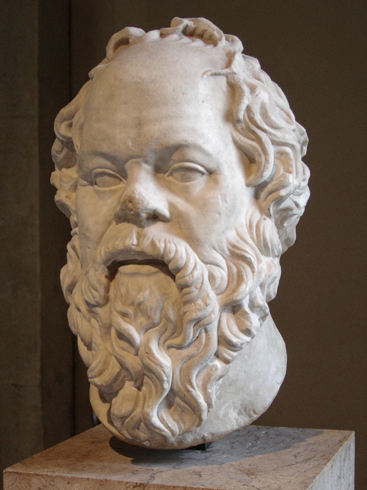
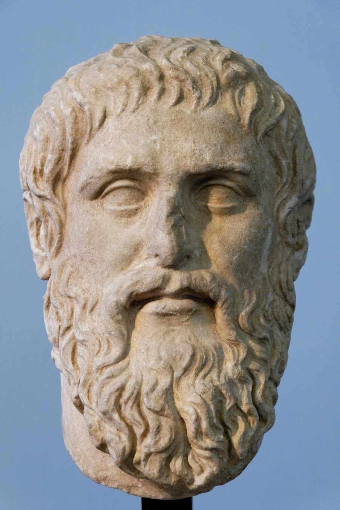
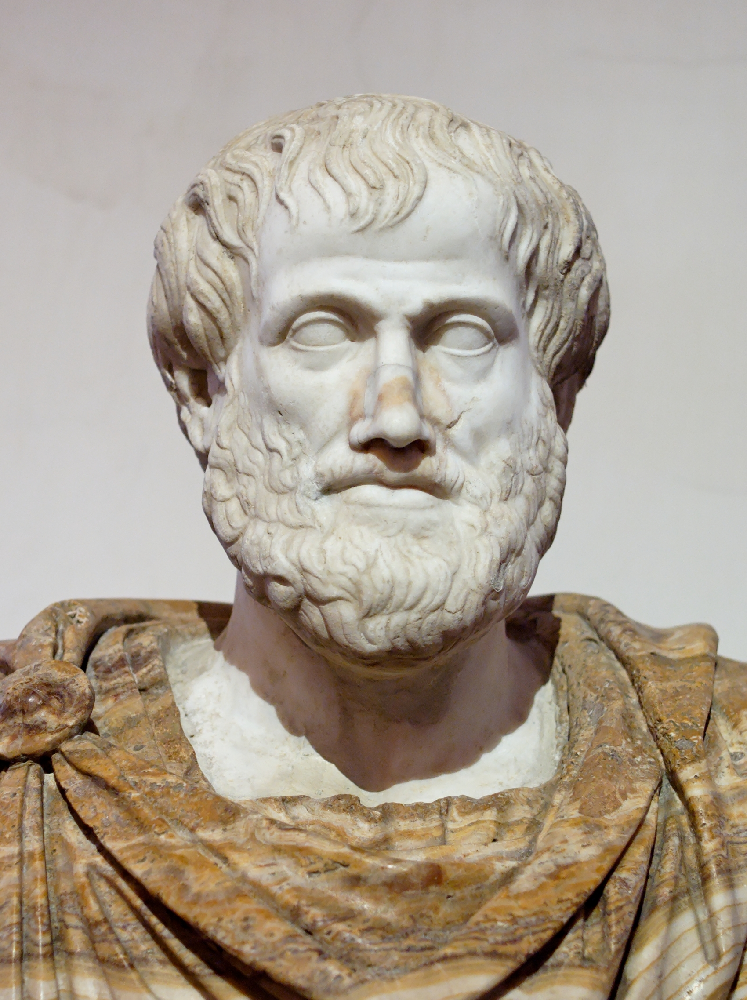
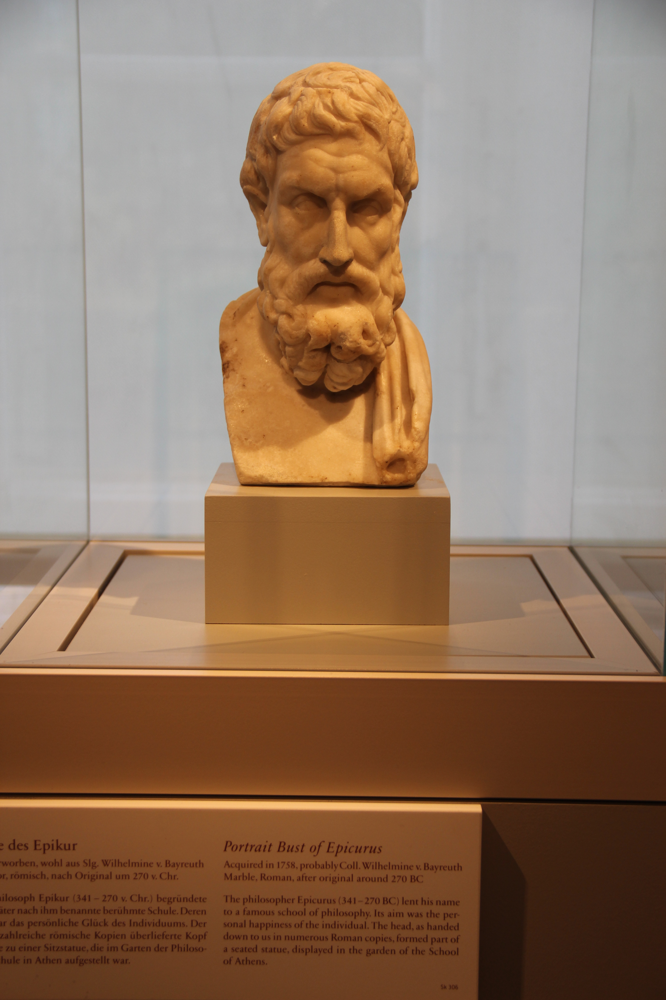
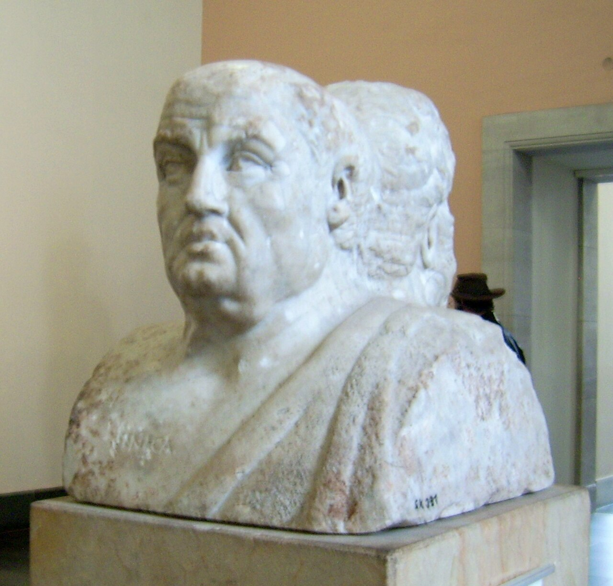
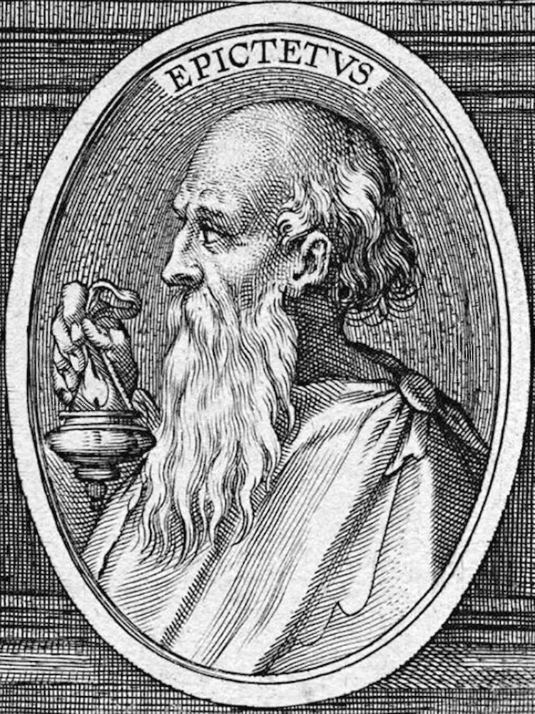
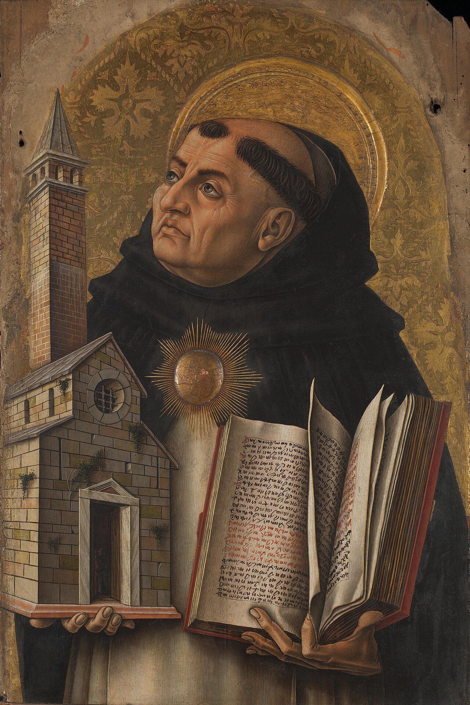
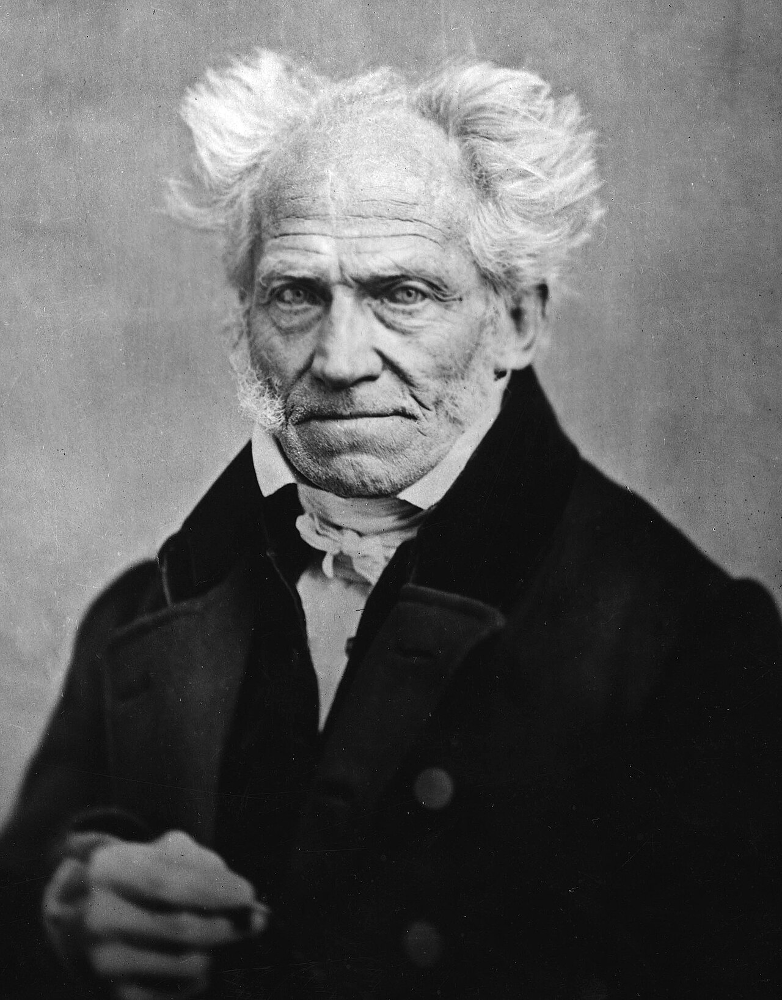

📚 Biblioteca giornaliera
Massime filosofiche con quiz e riassunti di libri pratici. Un'idea al giorno, ben evidenziata.
💬 Filosofi 18

Eraclito
Non si può discendere due volte nel medesimo fiume
Leggi la scheda →
Socrate
So di non sapere
Leggi la scheda →
Platone
La meraviglia: ecco l'unico vero inizio della filosofia
Leggi la scheda →
Aristotele
L'uomo è per natura un animale politico
Leggi la scheda →
Epicuro
La morte non è nulla per noi
Leggi la scheda →
Seneca
Non abbiamo poco tempo, ma ne perdiamo molto
Leggi la scheda →
Epitteto
Non sono i fatti a turbarci, ma i giudizi sui fatti
Leggi la scheda →Sant’Agostino
Tardi ti amai, bellezza tanto antica e tanto nuova
Leggi la scheda →
Tommaso d'Aquino
La grazia non distrugge la natura, ma la perfeziona
Leggi la scheda →
Cartesio
Penso, dunque sono
Leggi la scheda →Blaise Pascal
Il cuore ha le sue ragioni, che la ragione non conosce
Leggi la scheda →Spinoza
Non ridere, non lamentarsi, non detestare, ma comprendere
Leggi la scheda →David Hume
La ragione è schiava delle passioni
Leggi la scheda →
Kant
Il cielo stellato sopra di me e la legge morale in me
Leggi la scheda →
Schopenhauer
La vita oscilla tra dolore e noia
Leggi la scheda →
Nietzsche
Ciò che non mi uccide mi rende più forte
Leggi la scheda →Hannah Arendt
Pensare ciò che stiamo facendo
Leggi la scheda →Simone Weil
L'attenzione è la più rara e pura forma di generosità
Leggi la scheda →📚 Libri motivazionali 18

Pre-Suasion
Robert B. Cialdini
Leggi la scheda →
So Good They Can't Ignore You
Cal Newport
Leggi la scheda →
Feeling Good
David D. Burns
Leggi la scheda →
Awaken the Giant Within
Tony Robbins
Leggi la scheda →
The Psychology of Selling
Brian Tracy
Leggi la scheda →
Come trattare gli altri e farseli amici
Dale Carnegie
Leggi la scheda →
Getting to Yes
Roger Fisher e William Ury
Leggi la scheda →
Mindset
Carol S. Dweck
Leggi la scheda →
Le 7 regole per avere successo
Stephen R. Covey
Leggi la scheda →
Deep Work
Cal Newport
Leggi la scheda →
L'uomo in cerca di senso
Viktor E. Frankl
Leggi la scheda →
Atomic Habits
James Clear
Leggi la scheda →
Never Split the Difference
Chris Voss con Tahl Raz
Leggi la scheda →
Talk Like TED
Carmine Gallo
Leggi la scheda →
SPIN Selling
Neil Rackham
Leggi la scheda →
Le armi della persuasione
Robert B. Cialdini
Leggi la scheda →
Intelligenza emotiva
Daniel Goleman
Leggi la scheda →
Come vincere lo stress e cominciare a vivere
Dale Carnegie
Leggi la scheda →